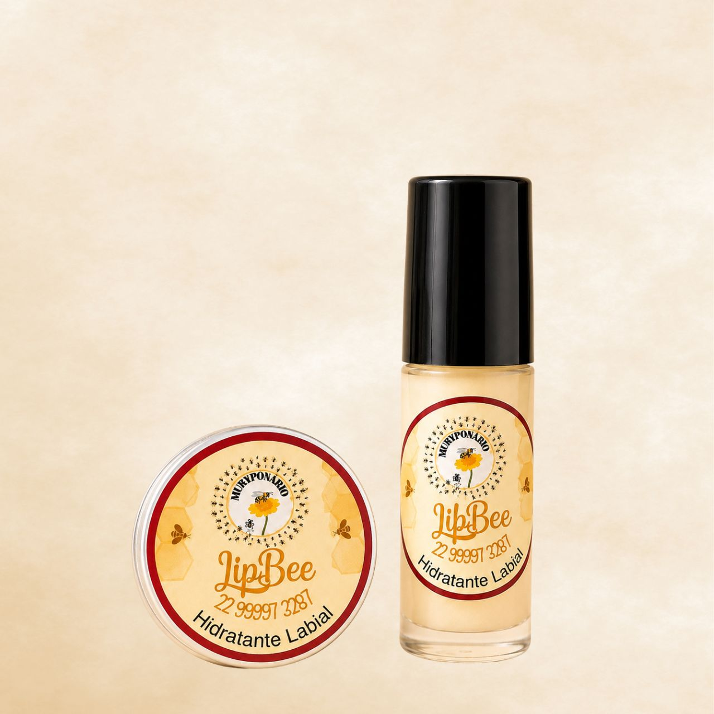

Lábios
Lip Bee
4 gHidratante labial com óleos vegetais, cera de abelhas e mel. Forma uma barreira protetora que ajuda a reter a umidade, prevenindo o ressecamento e deixando os lábios macios e hidratados. Com Vitamina A, auxilia na regeneração e recuperação de lábios secos e rachados.
Saiba mais